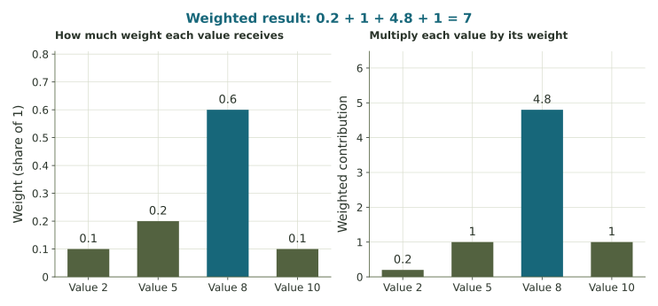

Attention as a weighted average
Start with a familiar average, give values unequal shares, and see how the combined result changes.
From an ordinary mean to unequal weights
Imagine combining two scores. If both count equally, take their ordinary mean. If one counts more, a weighted average gives it a larger share of the result. This is the familiar calculation behind the small attention example here.
The four values 2, 5, 8, and 10 have ordinary mean (2 + 5 + 8 + 10)/4 = 6.25. Equal decimal weights give the same result: 0.25(2) + 0.25(5) + 0.25(8) + 0.25(10) = 6.25.
Combine one numerical feature
Suppose four tokens carry one numerical feature with values 2, 5, 8, and 10. A token is one of the pieces of text a model processes. In this example, the weights are 0.10, 0.20, 0.60, and 0.10. They are nonnegative and total 1.
| Feature value | Weight | Product |
|---|---|---|
| 2 | 0.1 | 0.2 |
| 5 | 0.2 | 1.0 |
| 8 | 0.6 | 4.8 |
| 10 | 0.1 | 1.0 |
Add the products: 0.20 + 1.00 + 4.80 + 1.00 = 7.00. The combined feature is 7, compared with ordinary mean 6.25. The weight 0.60 gives the value 8 a particularly strong influence.

In transformer attention, a model computes context-dependent weights and combines value vectors. A vector is a list of numerical features. Each coordinate is combined by the weighted-sum operation shown here. Our single feature makes that arithmetic visible.
Change the weights, keep the values
Predict which direction the result will move before changing the preset. Check that the weighted result stays between 2 and 10. A large weight shows influence in this combination; it does not show that the information is true.
Try the weighted calculation
Use the given weights 0.10, 0.20, 0.60, and 0.10 for these questions, regardless of the explorer setting above.
What this picture includes
The numbers here are assigned for practice. Real models learn transformations and use many features, heads, and layers. An attention weight alone is not a complete account of why a model produced an answer.
In a next-token generator, attention uses the text available so far. The additional practice also shows a whole-sentence example; it explains why those two settings must be distinguished.
Week 8 will connect nonnegative weights adding to 1 with geometric mixtures. Here the central calculation is the weighted average.
Source: Vaswani and colleagues, Attention Is All You Need, especially Sections 3.2 and 3.2.3.